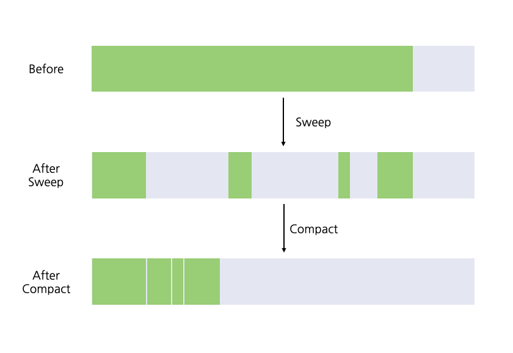

스택 영역은 메서드가 끝나거나 스레드가 종료되면 자연스럽게 회수 되는 반면에 힙과 메서드 영역은 메모리 요구량이 런타임에만 결정되기 때문에 불확실하다.
3.2 대상이 죽었는가
- Gc 가 힙을 청소하기 위해선 우선 어떤 객체가 살아있고, 죽었는지를 판단해야한다.
참조 카운팅 알고리즘
- 객체가 참조하는 곳이 늘어날 수록 카운터를 증가하고 반대면 감소한다. 카운터가 0 이되면 사용할 수 없는 객체임을 의미한다.
- 자바에서는 사용하지 않는 알고리즘이다.
-Xlog:gc* 매개변수 : GC 정보를 출력한다.
도달 가능성 분석 알고리즘
- java,c#등 주류 언어들이 사용하는 객체 생사 판단 알고리즘
- 참조 체인 : GC 루트를 시작 노드 집합으로 사용해 탑색을 시작하는데, 탐색 과정에서의 경로이다.
- GC 루트와 어떤 객체 사이에 참조체인이 존재 하지 않으면 더 이상 사용할 수 없는 객체이다.
GC Root는 메모리의 Anchor Point로 메모리 풀 외부에서 내부를 가리키는 포인터이다.
- 스택 프레임(Stack Frame)
- JNI
- 레지스터(hoisted variable)
- (JVM 코드 캐시에서) 코드 루트
- 전역 객체
- 로드된 클래스의 메타데이터
다시 참조 이야기로
- 일반적으로 메모리의 주소를 가리키면 객체를 참조한다고 얘기하는데, 메모리가 여유로울 때는 그냥 두고, 메모리가 부족하다면 그때 회수하는 객체를 표현 할 수 없다. (캐시 전략)
- 그래서 참조를 4가지 유형으로 나타낸다.
- 강한 참조 ( strong reference ) : 프로그램 코드에 참조를 할당 하는 경우
- 부드러운 참조 ( soft reference ) : 유용하지만 필수는 아닌 객체, 메모리 오버플로가 나기 직전에 두번째 회수를 위한 회수 목록에추가된다.
- 약한 참조 ( weak reference ) : 다음 가비지 컬렉션까지만 살아있다. 메모리가 넉넉하더라도 가비지 컬렉션시에 모두 회수 된다.
- 유령 참조 ( phantom reference ) : 객체 수명에 영향을 주지 않고 객체가 회수될때 알림을 받는 용도로 사용된다.
메서드 영역 회수하기
- 가비지 컬렉터가 메서드 영역을 반드시 청소해햐 하는것은 아니다.
- 메서드 영역의 가비지 컬렉션은 상수, 클래스를 회수한다.
- 상수 : 현재 시스템에서 상수를 참조하는 객체가 없으면 회수한다.
- 클래스 : 아래의 세가지 조건을 만족해야한다.
- 이 클래스의 인스턴스가 모두 회수 되었다.
- 이 클래스를 읽어들인 클래스 로더가 회수되었다.
- 이 클래스에 해당하는 객체를 어떤곳에서도 참조하지 않고, 리플렉션도 사용하지 않는다.
- 리플렉션, 동적 프락시, cglib 과 같은 바이트 프레임 워크를 사용하거나 JSP,OSGI의 경우 타입 언로딩을 지원해야한다. 그래야 메서드 영역에 여유가 생긴다.
3.3 가비지 컬렉션 알고리즘
객체의 생사를 판별하는 방식을 기준으로 가비지 컬렉션 알고리즘을 참조 카운팅 GC, 추적 GC 로 분류 할 수있다.
- 참조 카운팅 GC = 직접 가비지 컬렉션 ( 자바에서는 사용하지 않음 )
- 추적 Gc = 간접 가비지 컬렉션
뒤이어 나오는 GC 알고리즘들은 모두 JVM 에서 사용하는 추적 GC 에 포함되는 알고리즘들이다.
세대 단위 컬렉션 이론
세대 단위 컬렉션 이론의 가정
- 약한 세대 가설 : 대다수 객체는 일찍 죽는다
- 강한 세대 가설 : 살아남은 횟수가 늘어날수록 더 오래 살 가능성이 커진다.
- 세대 간 참조 가설 : 세대 간 참조의 개수는 같은 세대안에서의 참조보다 훨씬 적다. ( 다른 세대에 있으면 한쪽이 빠르게 회수되고, 아니라면 같은 세대로 승격되므로)
- 자바 힙에 몇 개의 영역을 나누고 객체들을 나이에 따라 각기 다른 영역에 할당한다.
- 나이 : 가비지 컬렉션에서 살아남은 회수
- 자바 힙을 여러 영역으로 나눠 가비지 컬렉터를 한번에 하나 또는 몇 개의 영역만 회수하게 할 수 있다.
- 마이너 GC : 신세대를 대상으로만 GC
- 메이저 GC : 구세대만 대상으로 하는 GC
- 혼합 GC : 신세대 전체와 구세대 일부를 대상으로 GC
- 전체 GC : 자바 힙 전체, 메서드 영역까지 GC
- 객체들의 생존 특성에 따라 가비지 컬렉션 알고리즘을 구분해 적용할 수 있다.
- mark-sweep 표시 후 쓸기
- mark-copy 표시 후 복사
- mark-compact 표시 후 모으기
자바 에서의 세대 단위 컬렉션 이론 구현
힙을 최소 두 영역 신세대, 구세대 로 나눈다.
신세대에서 살아남으면 구세대로 승격된다.
마크-스윕 알고리즘
- 가장 기본적인 GC 알고리즘으로 2단계로 구성된다.
- 회수할 객체들에 모두 표시 ( GC 대상 객체는 세대 단위 컬렉션 이론등을 사용)
- 표시된 객체들을 쓸어담는다.
- 단점
- 실행 효율이 일정하지 않다. 회수할 객체가 많을 수록 효율이 떨어진다.
- GC가 쓸고 간 메모리 쓸고 간 메모리 단편화가 심하다.
마크-카피 알고리즘
- 회수할 객체가 많을 수록 효율이 떨어지는 마크-스윕 알고리즘의 대안
- 가용 메모리를 1:1로 나눠 한 블록만 사용한다.
- 한쪽 블록이 가득 차면 살아남은 객체들을 다른 블록으로 복사하고 기존 블록을 비운다.
- 복사 과정에서 메모리의 한쪽 끝부터 쌓여 메모리 파편화 문제도 해결된다.
- 단점
- 가용 메모리 공간이 절반으로 줄어든다.
- 생존한 객체가 많으면 복사하는 과정에서 낭비가 발생하는데, 신세대 ( 마이너 Gc) 의 경우 생존 객체가 통계적으로 적기 때문에 마이너 GC에 적합하다.
아펠 스타일 컬렉션
- 신세대의 객체들의 생존기간이 짧다는 점은 반영해 이에 더 최적화된 전략으로 신세대 공간을 아래와 같이 나눈다.
- 80% 의 에덴 공간
- 10% 의 생존자 공간 두개
- 가비지 컬레션 실행시 에덴과 생존 공간중 하나에서 생존한 객체를 사용하지 않은 생존자 공간으로 이동한 후 에덴과, 기존의 생존 공간을 비운다.
- 메모리 할당 보증 : 10%의 생존자 공간에 생존객체를 이동해야하는데 생존한 객체가 10%보다 클 수 있다. 이때, 할당 보즘 메커니즘을 사용해 객체들을 구세대에 바로 추가한다.
마크-컴팩트 알고리즘

- 마크-카피 알고리즘은 생존률이 높은 구세대에 적용하기에는 복사할 객체가 많아져 적합하지 않다.
- 마크-컴팩트 알고리즘은 표시 단계 이후 생존한 모든 객체를 메모리 한쪽 끝으로 모은 다음 나머지 공간을 한꺼번에 비운다.
- 마크 스윕가 유사하지만 생존 객체를 메모리 내부에서 이동 시킨다는 차이점이 존재한다.
- 객체들이 이동하게 되면 기존의 객체들을 참조하던 모든 객체들을 갱신해야 하는 단점이 존재한다.
- 파편화 없는 할당 연결 리스트 : 마크-스윕처럼 메모리를 이동시키지 않는경우에 파편화 문제가 발생하는데, 이때 할당 과 접근방식이 복잡해진다. 메모리 할당 문제는 하드 디스크와 같이 연속된 공간이 아닌 파일 조각을 파티션 테이블로 관리해 해결할 수 있다.
- 마크 스윕의 경우 메모리의 파편화로 컬렉터의 효율을 떨어뜨리고, 마크-컴팩트는 메모리 이동후 프로그램이 잠시 정지하는 단점이 존재한다.
- 이를 혼용하여 CMS 컬렉터 는 마크 스윕을 우선 사용하다가 메모리 파편화 정도가 심해지면 마크-컴팩트 알고리즘을 사용해 메모리 공간을 확보한다.
3.4 핫스팟 알고리즘 상세 구현
루트 노드 열거
- 객체의 생사를 판단하는 알고리즘은 도달 가능성 분석 알고리즘에서 GC 루트 집합으로부터 참조 체인을 찾는 작업
- GC 루트에 고정할 수 있는 노드
- 전역 참조 ( 상수, 클래스 정적 속성)
- 실행 콘텍스트 ( 스택프레임의 지역 변수 테이블등)
- 루트 노드 열거 단계는 모든 참조를 확인해야해 프로그램이 일시 정지된다.
- 정확한 가비지 컬렉션 : 사용자 스레드가 정지된 후 모든 참조 체인을 확인할 필요 없다. 가상 머신이 객체 참조가 저장된 위치를 직접 알아낼 방법이 있으면 된다.
- OopMap : 핫스팟은 정확한 가비지 컬렉션을 구현하기 위해 OopMap이라는 데이터 구조를 사용한다.
- 클래스 로딩후 객체에 포함된 각 데이터 타입을 확인 한다. JIT컴파일 과정에서 스택 ,레지스터에 존재하는 어떤 데이터가 참조인지 기록
- 컬렉터는 메서드 영역과 다른 GC 루트들로부터 시작하여 추적해보지 않고도 스캔 과정에서 이 정보를 직접 얻어 내어 GC 루트를 빠르게 열거할 수 있다.
안전 지점
- OopMap을 사용해 Gc 루트들을 더 빨리 열거할 수 있게 되었으나 참조관계나,OopMap을 변경하는 명령어에 모두 OopMap을 만들어 넣으면 메모리를 많이 사용한다.
- 그래서 모든 명령어 각각에 OopMap을 생성하는 방식 대신에 안전 지점이라는 특정한 위치에 기록한다.
- 가비지 컬렉터는 프로그램이 안전 지점에 도달할때 까지 절대 멈춰 세우지 않는다.
수거 과정에서 프로그램이 정지 (stop the world) 가 발생함을 의미 - 프로그램이 장시간 실행될 가능성에 따라 적정한 안전 지점 위치를 결정한다.
안전 지점이 너무 적으면 컬렉터가 오래 기다리게 되고, 너무 많으면 런타임 메모리 부하가 커진다.- 장시간 실행 가능성은 명령어 흐름의 다중화 ( 메서드 호출, 반복문, 예외처리 )에 의해 결정된다.
- 가비지 컬렉션 수행시 JNI를 호출하는 스레드를 제외한 모든 스레드를 안전 지점까지 실행하고 멈춰야 한다. 두가지 방법지 존재한다.
- 선제적 멈춤 (preemptive suspension): 가비지 컬렉션 시작시 시스템이 모든 사용자 스레드를 인터럽트 한다. 중단된 위치가 안전 지점이 아니라면 스레드 재개하고 안전 지점에 도착할 때까지 인터럽트를 반복한다.
이 방식을 사용하는 가상머신은 거의 없다. - 자발적 멈춤 (voluntary suspension): 가바지 컬렉터가 스레드 수행에 관여하지 않고 플래그 비트를 설장한다. 각 스레드는 flag 변경을 polling 하며, 플래그값이 true 로 변경 되었으면 안전 지점에서 스스로 멈춘다.
- 선제적 멈춤 (preemptive suspension): 가비지 컬렉션 시작시 시스템이 모든 사용자 스레드를 인터럽트 한다. 중단된 위치가 안전 지점이 아니라면 스레드 재개하고 안전 지점에 도착할 때까지 인터럽트를 반복한다.
안전 지역
- 안전 지점을 사용해 카비지 컬렉션 수행시 스레드 들을 안정적으로 중지 시킬 수 있었다.
- 그러나 운영체제에 의해 잠자기, 블록 된 상태의 스레드들은 가상머신의 인터럽트를 응답할 수 없어, 자발적으로 멈출 수도 없다.
- 안전 지역은 일정 코드 영역에서 참조 관계가 변하지도 않음을 보장하는 영역으로 이 안에 존재하면 가비지 컬렉션 수행 여부에 구애 받지 않는다.
- 안전 지역을 벗어나려는 스레드들은 가비지 컬렉션이 수행중인지를 판단하여 이 지역을 벗어날 수 있다.
기억 집합과 카드 테이블
- 기업 집합 : 세대 간 참조 문제를 해결하기 위해 사용되는 데이터 구조, 신세대에 기억 집합을 두어 구세대와 GC 루트 전부를 스캔해야 하는 사태를 방지
- 기억 집합을 통해 특정 비회수 영역에서 회수 영역을 가리키는 포인터가 존재하는지 확인한다.
- 기업 집합의 정밀도를 낮춰 기록 단위를 더 크게 잡아 공간과 관리 비용을 줄일 수 있다. 아래의 3가지 정밀도중 선택할 수 있다.
- 워드 정밀도 : 레코드 하나가 메모리의 워드 하나에 매핑된다.
- 객체 정밀도 : 레코드와 객체 하나를 매핑한다.
- 카드 정밀도 : 레코드와 하나의 메모리 블록을 매핑한다.
- 카드 테이블 : 카드 정밀도를 사용하여 기억 집합을 관리하는 방식
- 카드 페이지 : 카드 테이블이 가리키는 메모리 블록 하나로 보통 하나 이상의 객체가 존재한다. 이 객체들 중 하나라도 세대 간 포인터 참조가 존재하면 카드 테이블에 해당 원소를 “더렵혀 졌다 ( 1 )” 로 표현한다.
- 객체를 회수할 때 카드 테이블 집합에서 더렵혀진 원소만 GC 루트에 추가해 함께 스캔한다.
- 결과적으로 GC 루트의 스캔 범위를 좁힐 수 있다.
쓰기 장벽
- 카드 테이블을 이용하면 객체가 더럽혀지는 순간 카드 테이블을 갱신해야 하는데 쓰기 장벽 기술을 사용하여 테이블을 관리해야 한다.
- 읽기 장벽 : cpu 실행 최적화로 실행 순서 변경을 방지하는 메모리 장벽 기술
- 쓰기 장벽 가상 머신 수준에서 참조 타입 필드 대입 시 끼어드는 AOP, 대입 전후로 추가 동작을 수행할 수 있게 해준다. ( 어라운드 어드바이스 )
- 사전 쓰기 장벽
- 사후 쓰기 장벽
- 쓰기 장벽을 이용해 가상 머신은 추가로 실행할 명령어를 생성해 대입 연산 모두에 추가한다.
동시 접근 가능 분석
- 루트 노드 열거 이후 가비지 컬렉터는 GC 루트로 부터 객체 그래프를 탐색한다.
- 사용자 스레드는 수집 단계에 모두 정지 되는데, 앞서서 루트 노드 열거의 시간은 OopMap을 사용하여 감소 시켰다. 그러나 열거된 객체들의 그래프를 탐색하면서 정지되는 시간은 힙의 크기에 비례한다.
- 참조 관계를 추적 하는 가비지 컬렉션 알고리즘은
- 삼색 표시 기법 : 객체가 그래프를 탐색하는 과정에서 방문 객체를 조건에 따라 흰색, 검은색, 회색으로 색칠하는 기법으로 GC의 동시성과 정확성을 증명
-
흰색 : 방문 한적 없음
-
검은색 : 방문했고, 이 객체를 가리키는 모든 참조를 스캔 완료함
-
회색 : 방문 했으나 이 객체를 가리키는 모든 참조를 스캔 완료한 것은 아님
-
사용자 스레드와 컬렉터가 동시에 실행된다면 발생 가능한 문제
- 죽은 객체를 살아 있다고 잘못 표시 -> 증분 업데이트로 해결
- 살아 있는 객체를 죽었다고 표시 ->시작단계 스냅숏로 해결
-
- 핫스팟 가상 머신은 증분 업데이트 시작 단계 스냅숏을 모두 활용